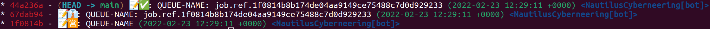

Git Queue Documentation


A GitHub Action to handle job queues stored in Git.
Welcome to the Git Queue documentation for the Git Queue - GitHub Action.
Git Queue is a job queue with concurrency optimistic lock mechanism to guarantee job execution order (by updating the job state), implemented with a event sourcing approach, using empty git commits as the event store. Currently with one pending-to-process job limit.
This is how git log looks when you use the queue:

The queue has the following characteristics:
- It only allows processing one pending job at the same time.
- Jobs are done by GitHub workflows intended to create git commits and merge them into target branches.
- It provides an optimistic locking mechanism to guarantee that commits are merged in a mutual exclusion way, avoiding duplicate commits. When the queue accepts more than one active job (not finished) it will also guarantee the execution order.
And features:
- More than one pending job.
- Log job execution:
start-job,finish-job. - Custom payload for queue commands.
Check the Roadmap for upcoming features.
Use case
One comment use case is updating a submodule in a project when the submodule repository is updated.
- You have two Git repositories:
R1andR2. R1is a submodule ofR2.- When a new commit is added to the main branch in
R1you want to update the submodule inR2. - You have a scheduled workflow
WinR2to import the latest changes fromR1.

T1. Add a new file to the library (1.txt)T2. We runW1to update the library, however, for some reason, this process takes more than 10 minutes.T3. We modify file1.txtin the library.T4. (T2+10") We run a second workflowW2to update the library.T5. The workflowW2finishes and creates a commit with the second version of file1.txt.T6. The workflowW1finishes and overwrites the first version of file1.txt`.
Credits
Original idea by Cameron Garnham.
The gpg.ts and openpgp.ts files were originally copied from this GitHub Action repository.
License
MIT. See LICENSE for more details.